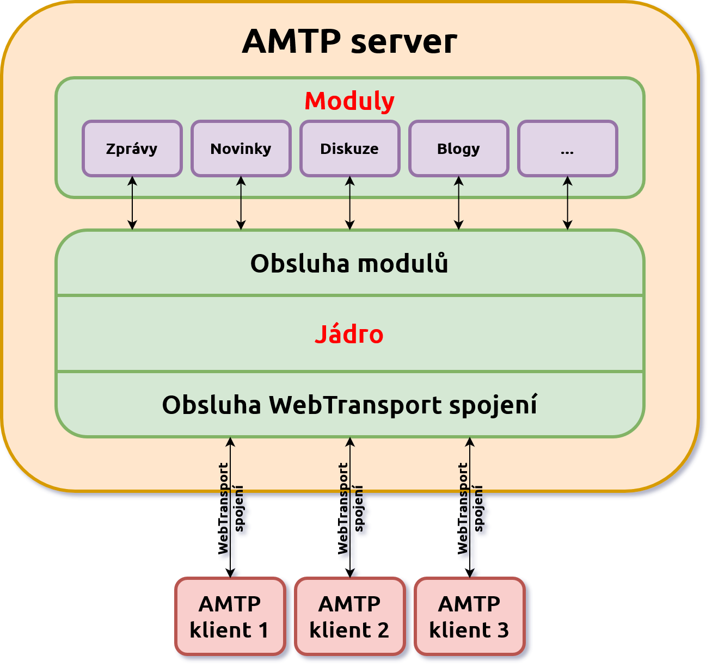
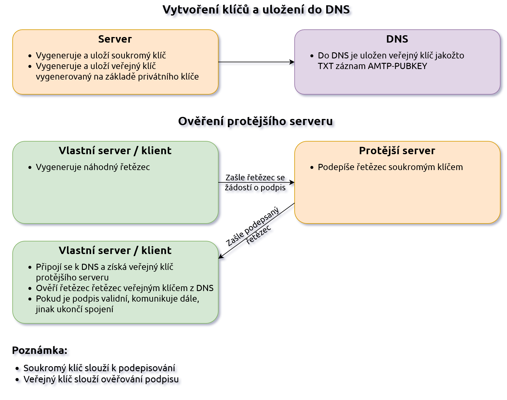
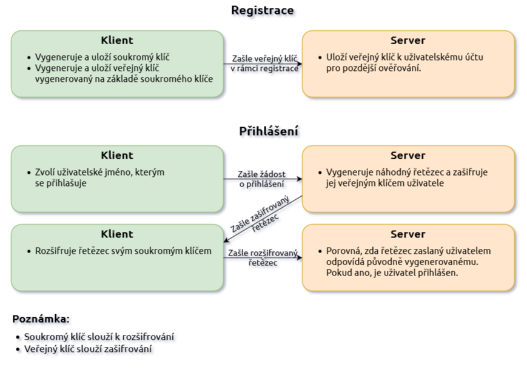
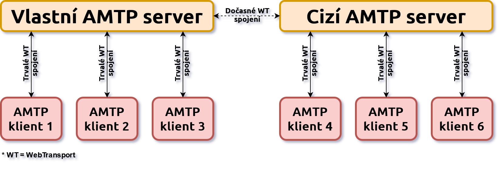

Advanced Mail Transfer Protocol (AMTP) - dokumentace
UPOZORNĚNÍ:
Toto je pouze návrh, nejedná se o konečnou verzi protokolu.
Verze návrhu: 1
Vydáno: Duben 2024
Úvod
Advanced Mail Transfer Protocol (AMTP) je nová generace síťového protokolu elektronické pošty (e-mailu), která překračuje omezení tradičních protokolů
SMTP,
POP a
IMAP využitím nových technologií a modulární koncepce. Plně tyto protokoly nahrazuje svou funkcionalitou (mimo zasílání zpráv, které je popsáno v samostatném modulu) a dokonce významně rožšiřuje jejich použitelnost díky svému modulárnímu konceptu. Zároveň používá modernější, bezpečnější metody přenosu dat v reálném čase.
Předmět dokumentace
Tento dokument popisuje:
- Síťový protokol: vysvětluje způsoby, kterými jsou data přenášena, formátována, přeposílána a zabezpečena.
Tento dokument nepopisuje:
- Implementaci: specifikaci software serverové a klientské aplikace - např. způsoby ukládání a zpracování dat
- Moduly: specifikaci jednotlivých serverových a klientských modulů - např. zasílání zpráv, diskuze, funkce sociálních médií apod. - moduly jsou popsány v samostatných dokumentech
Důvody vytvoření
Vzhledem k tomu, že tradiční e-mailové protokoly SMTP, POP a IMAP byly poprvé vyvinuty v 80. letech minulého století, vznikly po čase potřeby, které tyto protokoly již nejsou schopny efektivně řešit kvůli svému stáří a omezené funkcionalitě.
Konkrétní roky vytvoření dokumentace a posledních aktualizací původních e-mailových protokolů:
SMTP:
POP:
IMAP:
I přesto, že byly tyto protokoly v průběhu času aktualizovány, stále nepřinášejí dostatečná řešení pro nové potřeby, jako jsou komunikace v reálném čase, komplexní zabezpečení, strukturovanou komunikaci, snadnou rozšiřitelnost funkconalit a mnoho dalšího. To je způsobeno především snahou těchto aktualizací o navázání na původní koncepty, což je velmi limitující faktor, který vyžaduje změnu přístupu.
Protokol AMTP nenavazuje na původní zastaralé koncepty a místo toho přináší nové, moderní přístupy k řešení těchto potřeb.
Ačkoliv jsou veřejně dostupné i další otevřené protokoly či platformy (např.
Matrix,
Mastodon,
Diaspora,
Nostr apod.), které umožňují bezpečnou komunikaci a nabízí decentralizovanou či distribuovanou síť, ke které se může kdokoliv připojit, stále nenabízí některé důležité funkcionality, které
AMTP řeší, jako například modulární koncept funkcionalit nebo podporu nejnovějších komunikačních protokolů pro přenos dat v reálném čase.
Cíle protokolu
Cílem vytvoření tohoto protokolu je nahrazení současných e-mailových protokolů SMTP, POP a IMAP pomocí nové, moderní a bezpečné alternativy, která taktéž přináší snadnou rozšiřitelnost funkcionalit díky modulárnímu konceptu, čímž je zajištěna dlouhá životnost a udržitelnost implementací tohoto protokolu. Funkcionalita všech původních e-mailových protokolů je v AMTP plně zachována a navíc značně rozšířena a zmodernizována.
Zpětná kompatibilita s původními e-mailovými protokoly není implementována v rámci tohoto protokolu, jelikož jí lze zajistit pomocí modulu, který funguje jako most do SMTP serveru nebo jako oddělenou software implementaci v rámci klientské aplikace.
Zachované koncepty v AMTP z původního SMTP:
- Distribuovaná síť: Typ sítě, ve které je komunikace, zpracování a ukládání dat distribuováno mezi mnoho uzlů, které mohou mít různé vlastníky (poskytovatele služby). Tyto uzly mohou mezi sebou navzájem komunikovat, předávat si data a odlišovat se mezi sebou dle pravidel a sad služeb, které poskytují svým uživatelům. To síť odlišuje jak od centralistického modelu, kde je síť řízena jediným poskytovatelem, tak i od plně decentralizovaného modelu, kde každý koncový uživatel je suverénní jednotkou, která komunikuje s ostatními v rámci peer-to-peer sítě.
- Identita e-mailové adresy: Formát adresy uživatelského účtu je zachován (s menšími odlišnostmi, popsanými v dalších sekcích této dokumentace) z původních e-mailových standardů. Ve zjednodušené formě je to formát uživatel@doména.
Nové koncepty v AMTP:
- Komunikace v reálném čase: Tento přístup, díky technologiím jako je WebTransport, umožňuje uživatelům pohodlněji vést konverzace, rychleji reagovat na zprávy a využívat řadu dalších funkcionalit, kde je okamžitá komunikace nezbytná (např. videohovory, sdílení obrazovky, přenos velkých souborů apod.) a to navíc paralelně díky vícekanálové komunikaci. Tím jsou sníženy latence a zvýšena propustnost při přenosu dat.
- Bezpečná komunikace: Protokol klade velký důraz na zabezpečenou komunikaci a tím chrání soukromí uživatelů na více vrstvách. Díky tomu jsou minimalizována rizika spojená s únikem dat, znemožněny odposlechy a další formy kybernetických útoků.
- Rozšiřitelnost: Protokol umožňuje snadno vytvářet rožšíření o různé funkcionality díky modulárnímu konceptu, ať už jde o vytváření jednoduchých jednoúčelových aplikací (např. zasílání zpráv z IoT zařízení uživateli) až po multifunkční super-aplikace s četnou řadou funkcionalit (např. zasílání rychlých zpráv, funkce sociálních médií, e-commerce platformy, přenosy velkých souborů, přenos dat v online hrách apod.).
- Strukturovaná data: Přenášená data jsou sestavena strukturovaně ve formátu BSON, který kombinuje výhody strojově i lidsky snadno čitelného formátu JSON, s efektivitou binárního formátu. To umožňuje, aby data byla snadno přístupná a zpracovatelná jak pro vývojáře, tak pro aplikace.
Zvolené standardy
Při výběru standardů pro protokol AMTP byl kladen důraz na několik klíčových aspektů, které byly rozhodující pro zajištění, že nově vyvinutý protokol bude splňovat všechny potřeby moderní elektronické komunikace. Mezi tato hlavní kritéria, která ovlivnila výběr technologií patří:
- Výkon a efektivita: Standardy byly vybírány s ohledem na jejich schopnost zpracovávat velké objemy dat s minimálními zpožděními. Je důležité, aby protokol dokázal efektivně zpracovávat data a zároveň zajišťovat rychlý přenos informací mezi uživateli.
- Bezpečnost a ochrana soukromí: Zabezpečení je jedním z nejdůležitějších aspektů většiny komunikačních protokolů, zvláště v době kybernetických hrozeb. Standardy musí poskytovat robustní zabezpečení na úrovni přenosu dat a zároveň nabízet mechanismy pro ochranu soukromí uživatelů.
- Kompatibilita: Standardy byly vybrány také s ohledem na jejich úplnou podporu a dostupnost pro snadnou tvorbu klientských i serverových aplikací.
- Otevřenost: Je klíčové, aby standardy byly založeny na otevřených specifikacích, které jsou veřejně dostupné a bez patentových omezení. Stejně tak samotný AMTP je otevřeným protokolem.
- Inovace: Standardy mají představovat velmi inovativní komunikační řešení pro tvorbu moderních komunikačních aplikací.
WebTransport
Integrace standardu WebTransport byl zvolena, jelikož představuje nejvhodnější variantu ze současných protokolů pro přenos dat v reálném čase a to z několika důvodů:
- Nízké latence: Je navržen tak, aby minimalizoval latenci při navazování spojení a při výměně dat. To je zvláště důležité pro funkce vyžadující rychlou odezvu, jako jsou videohovory, videokonferenční hovory, hraní online her apod. Nízké latence celkově zlepšují uživatelskou přívětivost a zvyšují efektivitu komunikace.
- Vícekanálový přenos dat: Umožňuje vícekanálový přenos dat, což znamená, že poskytuje současné zpracovávání více datových proudů v rámci jednoho spojení. Tato vlastnost je velmi užitečná pro AMTP, protože umožňuje efektivní přenos různých typů dat (například textových zpráv, souborů, videa apod.) bez nutnosti navazování nových spojení pro každý datový proud.
- Spolehlivé i nespolehlivé proudy dat v kanálech: Podpora jak spolehlivého, tak i nespolehlivého proudu dat uvnitř kanálů poskytuje flexibilitu v závislosti na požadavcích dané funkcionality. Spolehlivé kanály zaručují doručení dat, zatímco nespolehlivé kanály mohou být využívány pro aplikace, kde je rychlost důležitější než spolehlivost (např. streamování živého videa, online hry apod.).
- Zabezpečení: Zajišťuje bezpečné šifrované spojení mezi propojenými body. Tato vlastnost je klíčová pro ochranu citlivých dat a zajišťuje ochranu proti odposlechům a dalším formám kybernetických útoků.
- Podpora obousměrné komunikace: Umožňuje obousměrnou komunikaci mezi klientem a serverem v reálném čase, což je ideální pro interaktivní aplikace, jako jsou chatovací systémy, hlasové a video přenosy, online hry a další funkcionality využívající komunikaci v reálném čase.
- Škálovatelnost: Díky efektivnímu využití síťových zdrojů a schopnosti snadno škálovat se zvyšujícím se nárůstem počtu uživatelů a datových proudů, je tento standard vhodný pro rozsáhlé nasazení, což umožňuje zvládat komunikaci s mnoha velkými objemy dat naráz bez výrazného zvýšení nákladů na infrastrukturu.
- Snadná integrace: Jelikož je navržen s ohledem na integraci s moderními webovými aplikacemi, snadno se implementuje do serverových i klientských aplikací.
BSON
- Lidsky čitelný formát: I když je tento formát reprezentován v binární podobě, je jeho struktura odvozena z JSON, na který je snadno převeditelný a je tak dobře čitelný pro lidi a zárověň i zpracovatelný strojově.
- Strukturovanost: Podporuje vnořené struktury, jako jsou objekty a pole, což umožňuje reprezentovat hierarchické datové struktury.
- Kompatibilita: Je široce používán a jeho struktura je podporována většinou programovacích jazyků.
- Škálovatelnost: Má schopnost škálovat do velmi komplexních a objemných datových struktur, u kterých umožňuje jejich snadné zpracování i efektivní přenos při velkých objemech.
- Interoperabilita: Zajišťuje vysokou míru interoperability mezi různými systémy a aplikacemi. Taktéž může být snadno převeden na JSON a naopak, což usnadňuje výměnu dat mezi různými technologiemi a platformami.
- Podpora datových typů: Rozšiřuje další typy dat, k již stávajícím, které jsou dostupné v JSON, jako např. binární data, datum a čas apod.
- Efektivita přenosu: Je reprezentován v binární podobě, což znamená, že je efektivnější pro přenos po síti ve srovnání s textovými formáty jako např. JSON. Menší velikost dat poskytuje rychlejší přenos a nižší nároky na šířku pásma, což je vhodné pro přenosy velkých objemů.
- Snadné zpracování dat: Umožňuje přímý přístup k jednotlivým prvkům dat, aniž by bylo potřeba procházet celý objekt, což zvyšuje rychlost a efektivitu při jeho zpracování. Tato vlastnost je zvláště užitečná pro implementaci komplexních funkcí, jako je filtrování nebo zpracovávání zpráv.
- Integrace s databázovými systémy: Mnoho současných databázových systémů, jako je např. MongoDB, nativně používá BSON pro ukládání a zpracování dat. To může usnadnit integraci s těmito databázemi, což je výhodné pro aplikace vyžadující komplexní databázové operace.
Architektura
Architektura protokolu je navržena tak, aby poskytovala modulární, bezpečné a škálovatelné řešení v rámci distribuované sítě pro potřeby moderní elektronické komunikace v reálném čase.
Distribuovaná síť
Distribuovaná síťová architektura v rámci AMTP přináší mnoho výhod, které jsou klíčové pro efektivní, bezpečné a odolné vzájemně propojené komunikační platformy. Zde jsou hlavní důvody, proč byl zvolen tento přístup:
- Odolnost proti výpadkům: Distribuovaná síťová architektura zajišťuje, že selhání jednoho uzlu má pouze lokální dopad na uživatele připojené k tomuto uzlu, avšak nemá žádný přímý vliv na funkčnost a dostupnost ostatních uzlů v síti. Toto omezení dopadu umožňuje, aby byla zajištěna kontinuita služby pro ostatní uživatele, kteří jsou připojeni k ostatním uzlům. Tím je zajištěna vyšší celková robustnost a odolnost celé sítě vůči izolovaným technickým problémům nebo geograficky lokalizovaným výpadkům, což je klíčové pro udržení nepřetržité globální komunikace.
- Odolnost proti cenzuře: Rozptýlení dat a služeb mezi velké množství poskytovatelů serverů v různých jurisdikcích může znesnadnit úsilí o cenzuru nebo úplné blokování služby, což zajišťuje větší svobodu a nezávislost informací. Pokud je uživatel cenzurován ze strany konkrétního provozovatele serveru, může si vybrat jiného provozovatele, který nabízí svobodnější alternativu. Pokud provozovatel služby je cenzurován ze strany regulačních orgánů (např. státu), může přesunout svá data do jiné, svobodnější jurisdikce.
- Konkurence mezi poskytovateli: V distribuované síti existuje více nezávislých poskytovatelů služeb, kteří spravují různé uzly. To podporuje zdravou konkurenci, která vede k lepší kvalitě služeb, zavádění nových či vylepšení původních funkcionalit a jiným inovacím. Také může vést i ke snížení nákladů za placené služby pro koncové uživatele. Konkurence mezi poskytovateli také umožňuje uživatelům vybírat z různých služeb na základě kvality, ceny, ochrany soukromí a dalších faktorů, což zvyšuje možnosti volby a zlepšuje celkovou uživatelskou spokojenost.
- Nezávislost: Pokud uživatel nemá zájem využívat služeb žádného poskytovatele služby, má možnost si spustit vlastní server s vlastními pravidly a nastaveními dle svých individuálních potřeb.
- Geografický výběr poskytovatele: Distribuce serverů geograficky blíže k uživatelům může výrazně snížit latenci a zlepšit rychlost odezvy, což zlepšuje uživatelskou zkušenost při komunikaci a přenosu dat. Taktéž umožňuje vybrat si poskytovatele, který lépe vyhovuje lokálním potřebám, jako je podpora ve stejném jazyce, možnost osobního kontaktu apod. To zvyšuje komfort, spokojenost a posiluje důvěru uživatelů v poskytované služby.
- Místní přizpůsobení: Distribuované sítě umožňují lokálním poskytovatelům služby se lépe přizpůsobit specifickým regionálním požadavkům uživatelů a nutnost dodržovat pouze lokální právní normy a nebýt tak svázán dodržováním regulací a norem z celého světa tak, jak je to u centralizovaných globálních služeb.
- Podpora pro inovace: Distribuovaná síťová architektura umožňuje experimentování a inovace na jednotlivých uzlech bez rizika narušení celého systému. To může sloužit jako testovací prostor pro nové technologie a modely před jejich širším nasazením.
- Bezpečnost: Útoky zaměřené na jednotlivé uzly nemají vliv na celou síť. Distribuovaná struktura komplikuje útočníkům snahu ovlivnit celý systém. Nežádoucí ovlivnění více uzlů v síti zvyšuje složitost a náklady na potenciální útoky.
- Ochrana soukromí: Distribuovaná síťová architektura může přispět k lepší ochraně soukromí uživatelů tím, že data menších poskytovatelů nejsou uchovávána a zpracovávána velkými korporacemi, které mohou mít tendence velké množství dat uživatelů různými způsoby zpracovávat nebo sdílet pro různé účely (reklamní, trénink AI, spolupráce s vládami apod.)
Modularita
Ačkoliv tato dokumentace nepopisuje implementaci serverové aplikace, je důležité zmínit, že tento protokol počítá s použitím modulární architektury serveru a podle toho vypadá i komunikace v rámci příkazů a to jak mezi klientem a serverem, tak i servery mezi sebou.
Jedna strana se spojí s druhým serverem, se kterým vytvoří WebTransport spojení a následuje obousměrný přenos dat. Tento server následně zpracovává data a odpovídá buď přímo z jádra (pokud byl příkaz určen jádru) a nebo je předán modulu (pokud byl určen modulu). Následně podle určení, odpovídá buď jádro nebo modul. V případě určení pro modul nezpracovává jádro nijak odpověď a jen jí předá klientovi.
Způsob komunikace serverového jádra s moduly není standardizován touto dokumentací, každá softwarová implementace může mít vlastní řešení (například výměna dat uvnitř aplikace, externě běžící služby propojené unixovými sockety, síťové spojení přes WebTransport apod.).
Modulární koncept architektury protokolu poskytuje několik klíčových výhod:
- Přizpůsobení: Díky modulární struktuře mohou provozovatelé serverů snadno vybírat specifické funkcionality dle svých potřeb nebo potřeb jejich uživatelů. Správci či uživatelé mohou vybrat pouze ty moduly, které potřebují, což umožňuje vytvořit řešení šité na míru bez zbytečného nadbytečného software. Například školy či firmy mohou využívat jiné moduly, než domácí uživatelé apod.
- Rychlý a snadný vývoj: Modulární architektura umožňuje různým vývojovým týmům pracovat nezávisle na sobě na různých modulech, což zrychluje celkový vývoj systému, usnadňuje správu kódu a zvyšuje přehlednost v kódu. To je zvláště užitečné ve velkých projektech. Taktéž to šetří čas tím, že nemusí vytvářet celý systém od základu, ale jen specifické funkcionality.
- Snadná údržba a aktualizace: Moduly lze nezávisle na sobě aktualizovat a vylepšovat. Takovéto aktualizace jednotlivých modulů mohou proběhnout bez přerušení zbylé části systému nebo nutnosti celý systém překompilovat či restartovat. To zároveň přináší i dlouhodobou životnost a udržitelnost systému tím, že usnadní integraci nových funkcionalit.
- Testování: Každý modul lze testovat samostatně, což zjednodušuje proces odstranění chyb a zvyšuje celkovou kvalitu software. Integrace nových funkcionalit je také snazší a méně náchylná k chybám, jelikož se jednotlivé moduly testují nezávisle.
- Odolnost proti chybám: V případě, že jeden z modulů selže, neovlivní to fungování ostatních částí systému, což přispívá k vyšší stabilitě, odolnosti a omezení rizik spojených s narušením celého systému.
- Bezpečnost: Každému modulu lze udělit různá omezená práva v rámci operačního systému, což zajišťuje zvýšenou bezpečnost celého systému.
- Multiverzování: V rámci jednoho serveru může běžet stejný modul ve více verzích najednou. To umožňuje serveru být kompatibilní pro nové i starší verze klientských aplikací.
- Interoperabilita: Moduly mohou být navrženy tak, aby mohly komunikovat a spolupracovat mezi sebou a také s různými dalšími externími zdroji, se kterými taktéž mohou sdílet data.
- Geografická nezávislost: Moduly mohou běžet na různém hardware umístěným na různých místech v síti.
- Finanční efektivita: Vývojáři mohou snadno vytvářet pouze určitou část systému, nikoliv celý systém a zároveň je jim umožněno svou funkcionalitu nabídnout již existující komunitě lidí, kteří systém využívají. To značným způsobem šetří náklady a zvyšuje potenciální výnosnost.
Následující obrázek nastiňuje zjednodušený příklad toho, jak může vypadat modulární architektura serverové aplikace:

Identita uživatele
Každý uživatelský účet v rámci AMTP je identifikován adresou, jejíž formát vychází původních e-mailových standardů, s několika odlišnostmi a je definován následovně:
- Adresa: sestává se z lokální a doménové části. Tyto části jsou odděleny znakem "@" (zavináč). Tedy ve tvaru: uživatel@doména
-
Lokální část: určuje unikátní uživatelské jméno v rámci každé domény a obsahuje následující povolené znaky:
- Malá písmena: (a-z) - pouze anglické abecedy - na jakékoliv pozici
- Číslice: (0-9) - na jakékoliv pozici
- Speciální znaky: tečka (.), pomlčka (-) a podtržítko (_) - tyto znaky nesmějí být použity na začátku ani na konci lokální části (tedy nikoliv např. john-@domain.tld) a nesmí se dva nebo více speciálních znaků objevit za sebou v jakékoliv kombinaci (tedy nikoliv např. john.-doe@domain.tld).
- Velká písmena anglické abecedy jsou tolerována a automaticky převáděna na malá písmena.
- Doménová část: určuje doménu, ke které má užívací právo provozovatel serveru (každý AMTP server může spravovat libovolné množství domén). Doménová jména mohou obsahovat znaky dle aktuálních standardů pro domény (definované v RFC 5890, RFC 5891, RFC 5892 a RFC 5893.
- Viditelné jméno: V rámci AMTP se již nepoužívá formát zápisu s viditelným jménem, který je známý z původních e-mailových protokolů (např.: "John Doe <john.doe@domain.tld>").
- Účel identity: Narozdíl od původních e-mailových protokolů, AMTP nedefinuje, co uživatelský účet reprezentuje (např. poštovní schránku, alias pro přeposílání pošty apod.). To je plně v režii modulů (např. modul pro rychlé zprávy).
- Profilové informace: Uživatelský účet v protokolovém jádru neobsahuje žádné další profilové informace (např. jméno, příjmení, pohlaví, datum narození, fotografie apod.). Tyto informace jsou plně v kompetenci modulů, kde mohou být reprezentovány v podobě uživatelských profilů. Tento přístup dává modulům svobodu v rozhodnutí, zda každý uživatelský účet bude reprezentovat jen jeden a nebo více uživatelských profilů, tzn. přihlášením k jednomu uživatelskému účtu se může uživatel dostat k několika svým profilům). Taktéž tento přístup zajišťuje možnost nezveřejňovat adresu uživatelského účtu, pokud moduly budou zobrazovat jiný typ identifikace profilů.
Zabezpečení
Zabezpečení dat je klíčovou součástí moderního komunikačního protokolu, jelikož s rostoucími objemy přenášených dat mezi uživateli, roste i riziko jejich potenciálního zneužití.
AMTP je navržen s důrazem na komplexní zabezpečení a to na několika úrovních, které jsou popsány v této sekci. Další úrovně zabezpečení mohou být doplněny v jednotlivých modulech.
Šifrovaný přenos dat
Šifrovaný přenost dat v je vyřešen v
AMTP díky tomu, že využívá
WebTransport spojení, které integruje protokol
QUIC, který používá šifrování na úrovni transportní vrstvy. Všechna přenášená data v rámci spojení jsou šifrována pomocí
TLS. Toto zahrnuje šifrování všech přenášených dat, vč. hlaviček a metadat, což minimalizuje riziko úniku citlivých informací a zároveň zajišťuje integritu dat tak, aby bylo zabráněno jejich modifikaci během přenosu.
Pro tento účel je vyžadován platný šifrovací certifikát, vydaný certifikační autoritou (např.
Let's Encrypt). Spojení s certifikátem s vlastním podpisem (bez certifikační autority) není povoleno (jak pro spojení
klient-server, tak i pro
server-server), protože u nich nelze ověřit identitu (může je vydat kdokoliv), proto je nutné si takový certifikát nechat vystavit od certifikační autority a používat ho pro účely jak šifrovaného přenosu dat, tak i pro ověření identity serveru.
Digitální podpis serveru
Digitální podpis serveru slouží k ověření, zda server, ke kterému se klient či jiný server připojuje, je opravdu ten, za který se vydává. Toto je bezpečnostní mechanismus, který zabraňuje útokům, jako je např.
IP spoofing.
Po nainstalování každého serveru se vygeneruje
soukromý klíč a z něj odvozený
veřejný klíč algoritmem, který podporují ostatní serverové i klientské aplikace.
Soukromý klíč zůstává bezpečně uložen na serveru.
Veřejný klíč společně s identifikací šifrovacího algoritmu se uloží do
DNS do
TXT záznamu
AMTP-PUBKEY.
Ihned po navázání spojení vlastního serveru či klienta s protějším serverem, se zašle dotaz protějšímu serveru se žádostí o podepsání námi náhodně vygenerovaného řetězce. Protější server podepíše tento řetězec svým soukromým klíčem a odešle ho zpět. Náš server nebo klient odešle následně dotaz do DNS pro získání TXT záznamu ATMP-PUBKEY uvedený k protějšímu serveru a tím získá jeho veřejný klíč. Náš server či klient následně ověří zda podepsaný řetezec odpovídá veřejnému klíči získanému z DNS. Pokud je podpis platný, nadále se komunikuje s protějším serverem, v opačném případě je ukončeno spojení.
V případě spojení server-server se po ověření protějšího serveru, provede stejné ověření z opačné strany (protější server si ověří náš server).

Bezpečné přihlašování
Proces ověřování uživatelů a správců je navržen tak, aby bylo zajištěno, že citlivé informace, jako je
soukromý klíč, zůstanou uloženy vždy jen na zařízení uživatele a nikam se nezasílají. Toho je dosaženo pomocí asymetrické šifrovací strategie zvané
výzva-odezva, která je popsána následovně:
1. Vygenerování klíčů:
- Po zahájení procesu registrace klient vygeneruje na svém koncovém zařízení jedinečný soukromý klíč. S využitím šifrovacího algoritmu kompatibilního s algoritmy podporovanými serverovou aplikací je z tohoto soukromého klíče odvozen odpovídající veřejný klíč. Tato dokumentace nespecifikuje seznam podporovaných šifrovacích algoritmů, to je plně na implementaci serveru a klientských aplikací a dává to možnost změny algoritmů v budoucnu. Soukromý klíč je bezpečně uložen v klientském zařízení.
2. Registrace účtu:
- Veřejný klíč spolu s identifikací použitého šifrovacího algoritmu se předává serveru při registraci účtu na serveru. Server poté uloží veřejný klíč a identifikaci šifrovacího algoritmu do svého úložiště (např. databáze) pro budoucí procesy ověřování.
3. Ověřování při přihlášení:
- Klient nejprve odešle serveru žádost o přihlášení spolu se svým uživatelským jménem a případně i heslem, pokud je používáno.
- Server vygeneruje náhodný řetězec (doporučuje se délka řetězce alespoň 40 znaků), který je následně zašifrován pomocí veřejného klíče klienta a poté je v této zašifrované formě odeslán klientovi spolu s jeho veřejným klíčem a identifikací šifrovacího algoritmu. Doporučuje se časově omezit platnost zašifrovaného řetězce (dobu platnosti si určí server, doporučená doba platnosti je zhruba 30 vteřin).
- Po přijetí klient použije svůj soukromý klíč k rozšifrování přijatého řetězce a odešle rozšifrovaný řetězec zpět na server k ověření.
- Server porovná rozšifrovaný řetězec s původně vygenerovaným řetězcem. Pokud se tyto dva řetězce shodují, potvrdí server identitu klienta a udělí mu přístup vydáním tokenu relace. Token relace by měl být taktéž časově omezen (dobu platnosti si určí server, doporučená doba platnosti je zhruba 15 minut v případě správce a 30 dní v případě uživatele). Platnost tokenu se doporučuje prodlužovat na dobu jeho platnosti od chvíle zaslání každého příkazu. Tím se zajistí, že token expiruje pouze při neaktivitě správce či uživatele, případně jeho ručním odstraněním.
Tato metoda ověřování využívá výhody asymetrického šifrování k ochraně uživatelských dat a zajišťuje, že citlivé informace, jako jsou soukromé klíče, zůstanou chráněny v rámci koncových zařízení uživatelů. Tento přístup zvyšuje bezpečnost a je v souladu s osvědčenými postupy pro bezpečnou komunikaci v moderních aplikacích.
Ověření uživatele pomocí soukromého klíče může být rozšířeno i ověřením hesla (standardně nepovinné, server si povinnost hesla může vynutit), které je zasláno při registraci v zahashované formě (výběr šifrovacího algoritmu je v kompetenci serverové a klientské aplikace). Tímto se docílí dodatečného zabezpečení pro případ, kdyby byl privátní klíč zkompromitován.

Koncové šifrování
Data zabezpečená
koncovým šifrováním představují další vrstvu zabezpečení nejen v případě selhání šifrování v rámci zabezpečeného spojení mezi klientem a serverem, ale i k tomu, aby nikdo, kromě koncových uživatelů neměl přístup k datům (např. ani správce serveru, na kterém má uživatel založený uživatelský účet).
Koncové šifrování není předmětem této dokumentace, jelikož je v kompetenci jednotlivých modulů (např. zprávy, telefonování apod.). I tak je třeba zmínit, že by mělo být implementováno ve veškerých funkcionalitách modulů, kde se přenáší soukromá data mezi koncovými uživateli nebo skupinami uživatelů. Taktéž je doporučeno vytvářet moduly tak, aby klíče byly často obměňovány.
DNS
Pro zajištění komunikace mezi servery v rámci distribuované sítě, jsou využity specifické DNS záznamy pro AMTP. Tyto záznamy jsou nezbytné pro správné a bezpečné směrování provozu mezi servery na základě jejich domén. Pro zapojení serveru do sítě pro účel předávání dat mezi servery, jsou nezbytné záznamy v DNS u domén, které jsou serverem využívány. Bez těchto záznamů není možné předávat data mezi servery.
V původních e-mailových standardech bylo využito několik záznamů v DNS, jejichž funkcionalita byla nahrazena v AMTP jinými specifickými doménovými záznamy. Následující tabulka vysvětluje, čím byly v rámci tohoto protokolu nahrazeny záznamy známé z původních e-mailových standardů:
| Záznam původních standardů |
Nahrazen AMTP záznamem |
Poznámka |
| A / AAAA |
A / AAAA |
Záznam určující doménové jméno serveru je zachován. |
| PTR |
- |
Záznam není již potřeba, jelikož představuje zastaralý způsob ověření serveru. V AMTP je legitimita každého serveru ověřena pomocí "TXT - AMTP-PUBKEY" záznamu. |
| MX |
TXT - AMTP-SERVERS |
Záznam určující který server je přiřazen ke kterému doménovému jménu, na kterém jsou uživatelské účty. |
| TXT - SPF |
- |
Tento záznam není potřeba, jelikož jeho funkci zastává "TXT - AMTP-SERVERS" záznam. |
| TXT - DKIM |
TXT - AMTP-PUBKEY |
Záznam určující veřejný klíč serveru, kterým si cizí servery ověřují legitimitu užívání doménového jména v adresách uživatelských účtů |
| TXT - DMARC |
- |
Záznam již není potřeba. Reporting neúspěšných pokusů o předání dat ze serverů, které postrádají legitimitu užívání účtů na cizích doménách pro legitimní servery je zbytečný, jelikož v rámci AMTP se nemůže stát, že takové zprávy by byly vůbec doručeny. Pokud by byl nějaký reporting potřeba, je možné na tuto funkcionalitu vytvořit modul. |
Konfigurace DNS
TXT - AMTP-SERVERS záznam:
- Tento záznam definuje cílové servery, na kterých jsou uživatelské účty pro určitou doménu (kombinuje funkcionalitu podobnou záznamům MX a SPF, které jsou určeny pro původní e-mailové protokoly).
- Záznam se určuje pro konkrétní doménu, která je určená pro adresy uživatelských účtů a definuje se řetězcem "amtp-servers=", po kterém následuje seznam jednotlivých serverů, které jsou odděleny čárkou (",")
- Servery jsou seřazeny podle priority. Pokud je některý server nedostupný, použije se pro připojení další server v řadě.
- Pokud není zadán žádný port, použije se standardně port 443.
Příklad:
subdomain.domain.tld. IN TXT "amtp-servers=amtp1.domain.tld,amtp2.domain.tld:12345,amtp3.domain.tld:23456"
Tento záznam definuje, že pro účty na doméně @subdomain.domain.tld jsou používány následující servery AMTP:
- amtp1.domain.tld na portu 443
- amtp2.domain.tld na portu 12345
- amtp3.domain.tld na portu 23456
TXT - AMTP-PUBKEY záznam:
- Tento záznam definuje, jaký veřejný klíč používá server ke své identifikaci po spojení s protějším serverem.
- Záznam začíná řetězcem "amtp-pubkey=", po kterém následují parametry oddělené čárkou:
- "e:" + název šifry
- "k:" + veřejný klíč
Příklad:
amtp1.domain.tld. IN TXT "amtp-pubkey=e:rsa,k:123456789abcdef"
Tento příklad uvádí, že pro server
amtp1.domain.tld je používán veřejný klíč "
123456789abcdef" se šifrovacím algoritmem
RSA.
Spojení
Spojení jsou realizována jak mezi klientem a serverem, tak i mezi servery navzájem.
- Spojení server-server - Servery jsou organizovány do distribuované sítě, kde každý server je schopný předávat data ostatním serverům. Tato komunikace je realizována přes spojení, které nemusí být perzistentní a může být ukončeno jednou nebo druhou stranou kdykoliv to jedna ze stran uzná za vhodné (např. server odesilatele po dokončení doručování dat nebo server příjemce po vypršení určitého časového limitu, kdy mezi servery nedošlo k žádné výměně dat). Podmínky za kterých dochází k odpojování serverů mezi sebou nejsou standardizováné touto dokumentací, jsou plně v kompetenci konkrétní implementace serverové aplikace. Důvodem je například to, že některé servery mohou mít omezené systémové prostředky a tak mohou spojení s ostatními servery častěji odpojovat. Naopak servery, které mají dostatečné systémové prostředky, mohou udržovat otevřené spojení s ostatními servery pro rychlejší komunikaci, bez nutnosti opětovného navazování spojení.
- Spojení klient-server - Každý klient je spojen se svým serverem prostřednictvím trvalého spojení. Pokud dojde k výpadku, automaticky se znovu klient k serveru připojí. Takováto spojení slouží jako stabilní kanál pro všechny operace, které klient potřebuje vykonávat (např. příjem zpráv, získávání notifikací, synchronizace dat apod.). Trvalá připojení klienta jsou klíčová pro udržení nepřetržité komunikace pro funkcionality, které vyžadují okamžité reakce, jako jsou např. rychlé zprávy nebo online hry. Díky WebTransportu mohou tato spojení efektivně spravovat více datových proudů současně, což minimalizuje zpoždění a zvyšuje celkovou uživatelskou spokojenost.
Na straně serveru je spuštěn
HTTPS server s platným šifrovacím certifikátem vydaným certifikační autoritou a podporujícím standard
HTTP/3. Přesný způsob komunikace je podrobně popsán v dokumentu
WebTransport over HTTP/3.
Po připojení k endpointu /amtp/ je vytvořena WebTransport session, v rámci které je možné otevírat a zavírat jednotlivé proudy, ve kterých probíhá komunikace pomocí příkazů. Více proudů může běžet souběžně.
Ihned po navázání spojení se serverem pošle server automaticky protější straně informace o sobě, které jsou také přístupné pod příkazem user_info.
Následující obrázek nastiňuje příklad toho, jak fungují spojení v rámci AMTP:

Příkazy
Příkazy jsou zasílány přes WebTransport pomocí obousměrného proudu dat. V rámci zasílání všech příkazů jádra protokolu se používají výhradně spolehlivé proudy. Moduly mohou používat spolehlivé i nespolehlivé proudy, dle jejich konkrétních potřeb.
V rámci každého příkazu se nejprve otevře proud, poté probíhá obousměrná komunikace pomocí příkazů strukturovaných ve formátu BSON a nakonec, jakmile již není potřeba mít proud otevřený, uzavře se jednou či druhou stranou, zatímco spojení může být stále zachováno. Více proudů v rámci jednoho spojení může běžet souběžně.
Chyby
V této sekci je popsána struktura obecných chyb, chyb jádra a modulů.
Obecné chyby jádra
Následující chyby nastávají nikoliv jako přímé odpovědi příkazů, ale při dalších speciálních událostech.
Chybové stavy:
| Kód chyby |
Zpráva |
Popis |
| 900 |
Unknown command |
Server obdržel od druhé strany nerozpoznaný příkaz |
| 901 |
Admin's token is missing |
Správce v příkazu neposkytl token relace |
| 902 |
Admin's token is invalid |
Správce poskytl neplatný token relace |
| 903 |
User's token is missing |
Uživatel v příkazu neposkytl token relace |
| 904 |
User's token is invalid |
Uživatel poskytl neplatný token relace |
Příklad obecné chyby:
{
"error": 900,
"message": "Unknown command"
}
Chyby příkazů jádra
Pokud příkaz vrátí chybu, je strukturována následovně:
Struktura chyby (z jádra, nikoliv z modulu):
| Název parametru |
Hodnota |
Vyžadováno |
Popis |
| error |
číslo |
✔ |
Stavové číslo chyby |
| message |
řetězec |
✔ |
Zpráva s chybou |
Příklad chyby od serveru:
{
"error": 1,
"message": "User not found"
}
Chyby příkazů modulů
Chyby generované moduly si definuje modul sám dle svých potřeb. Doporučuje se používat stejnou strukturu jako používá jádro pro lepší přehlednost.
Klient-server
V této sekci jsou popsány příkazy, které jsou využívány v komunikaci mezi klientskou a serverovou aplikací:
Správce
Všechny příkazy začínající "admin_" jsou určeny pouze pro správce. Aby bylo možné provádět tyto příkazy (mimo příkazů pro samotné přihlášení), musí být správce přihlášen. Pokud je přihlášení úspěšné, získá správce token relace, který musí být odeslán v každém následném příkazu. Tento token se liší od tokenu uživatele.
Přihlášení správce
Přihlášení správce probíhá ve dvou krocích - přihlašovací výzvě a přihlašovací odezvě. V přihlašovací výzvě zašle klient své přihlašovací jméno a pokud používá mimo privátního klíče i heslo, tak i hash tohoto hesla (nepovinné). Server ověří heslo (pokud správce používá) a následně vygeneruje náhodný řetězec, který server zašifruje veřejným klíčem správce. Tento zašifrovaný řetězec je předán správci. Správce následně řetězec rozšifruje pomocí svého soukromého klíče a zašle ho zpět v rámci přihlašovací odezvy. Server ho porovná s původně vygenerovaným řetězcem a v případě, že řetětec od klienta odpovídá původně vygenerovanému, pak správce přihlásí a udělí mu token relace. V opačném případě vrátí chybu.
Přihlašovací výzva
Struktura požadavku od klienta:
| Název parametru |
Hodnota |
Vyžadováno |
Popis |
| command |
"admin_login_request" |
✔ |
Název příkazu |
| user |
řetězec |
✔ |
Uživatelské jméno |
| password |
řetězec |
❌ |
Hash hesla |
Struktura odezvy od serveru:
| Název parametru |
Hodnota |
Vyžadováno |
Popis |
| verification_string |
řetězec |
✔ |
Řetězec výzvy pro zašifrování |
| public_key |
řetězec |
✔ |
Veřejný klíč, kterým byl řetězec zašifrován |
| encryption |
řetězec |
✔ |
Identifikace algoritmu, kterým byl řetězec zašifrován |
Chybové stavy:
| Kód chyby |
Popis |
| 1 |
Uživatelské jméno nebylo vyplněno |
| 2 |
Heslo nebylo vyplněno |
| 3 |
Uživatelské jméno nebylo nenalezeno |
| 4 |
Heslo je chybné |
Příklad požadavku od klienta:
{
"command": "admin_login_request",
"user": "admin"
}
Příklad odezvy od serveru:
{
"verification_string": "1A2B3C4D5E6F1A2B3C4D5E6F1A2B3C4D5E6F1A2B3C4D5E6F1A2B3C4D5E6F1A2B3C4D5E6F1A2B3C4D5E6F1A2B3C4D5E6F1A2B",
"public_key": "1234567890ABCDEF1234567890ABCDEF1234567890ABCDEF1234567890ABCDEF",
"encryption": "rsa"
}
Přihlašovací odezva
Příklad žádosti:
{
"command": "admin_login_verify",
"user": "admin",
"verification_string": "abcdefghijklmnopqrstuvwxyz1234567890abcd"
}
Příklad odezvy:
{
"admin_token": "1234567890abcdef1234567890abcdef1234567890abcdef1234567890abcdef"
}
Odhlášení správce
Správci
Seznam správců
Přidat nového správce
Úprava správce
Smazání správce
Domény:
Seznam domén:
Příklad žádosti:
{
"command": "admin_get_domains",
"admin_token": "1234567890abcdef1234567890abcdef1234567890abcdef1234567890abcdef"
}
Příklad odezvy:
{
"domains": {
[
{
"id": 1,
"name": "domain1.tld",
"created":"2023-11-25 14:57:03"
}, {
"id": 2,
"name": "domain2.tld",
"created": "2023-11-26 16:21:08"
}
]
}
}
Přidání nové domény
Úprava domény
Smazání domény
Uživatelské účty
Seznam uživatelů
Přidání nového uživatele
Úprava uživatelů
Smazání uživatele
Informace o serveru pro správce
Tento příkaz zobrazuje systémové prostředky serveru.
Příklad žádosti:
{
"command": "admin_sysinfo",
"admin_token": "1234567890abcdef1234567890abcdef1234567890abcdef1234567890abcdef"
}
Příklad odezvy:
{
"os_name": "Linux",
"os_version": "5.10.0-19-amd64",
"cpu_model": "Intel(R) Xeon(R) CPU E5-2673 v4 @ 2.30GHz",
"cpu_cores": 40,
"cpu_arch": "x64",
"cpu_load": 0,
"ram_total": 8332619776,
"ram_free": 7842000896,
"networks": [
{
"ens1": [
"192.168.0.2",
"12ab::34cd:56ef:7890:1234"
]
}, {
"ens2": [
"10.20.30.40",
"12ab::34cd:56ef:7890:4321"
]
}
],
"uptime": "8 days, 12 hours, 45 minutes, 52 seconds"
}
Uživatel
Všechny příkazy začínající "user_" jsou určeny pro uživatele. Aby bylo možné provádět tyto příkazy, musí být uživatel přihlášen (mimo příkazů pro samotné přihlášení). Pokud je přihlášení úspěšné, získá uživatel token relace, který musí být odeslán v každém uživatelském požadavku. Tento token se liší od tokenu správce.
Registrace uživatele
Možnost registrace účtu uživatelem musí být povolena na serveru
- TODO
- TODO - popsat chybu, kdy není registrace povolena na serveru
Přihlášení uživatele
Přihlášení uživatele probíhá ve dvou krocích - přihlašovací výzvě a přihlašovací odezvě. V přihlašovací výzvě zašle klient své přihlašovací jméno ve tvaru uživatel@doména a pokud používá mimo privátního klíče i heslo, tak i hash tohoto hesla (nepovinné). Server ověří heslo (pokud uživatel používá) a následně vygeneruje náhodný řetězec, který server zašifruje veřejným klíčem uživatele. Tento zašifrovaný řetězec je následně předán uživateli. Uživatel řetězec rozšifruje pomocí svého soukromého klíče a zašle ho zpět v rámci přihlašovací odezvy. Server ho porovná s původně vygenerovaným řetězcem a v případě, že řetětec od klienta odpovídá původně vygenerovanému, pak uživatele přihlásí a udělí mu token relace. V opačném případě vrátí chybu.
Přihlašovací výzva
- TODO
- TODO: expirace tokenu?
Přihlašovací odezva
Odhlášení uživatele
Změna veřejného klíče pro přihlášení
- TODO - pozor, vyžaduje ověření původním pubkey (+ heslem, pokud se používá)
Změna hesla pro přihlášení
- TODO - pozor, vyžaduje ověření původním pubkey (+ heslem, pokud se používalo)
- TODO - toto by mělo umět i nějak zrušit používání hesla pokud to server umožňuje (poslat null?)
- TODO - bude se vyžadovat aktivní příhlášení (tzn. mít token)?
Informace o serveru pro uživatele
Tento příkaz vrací informace o AMTP serveru a nevyžaduje token relace.
Příklad žádosti:
{
"command": "user_info"
}
Příklad odezvy:
{
"app_name": "AMTP Server",
"app_version": "1.00",
"hostname": "amtp.domain.tld"
}
Seznam používaných modulů
Tento příkaz zobrazuje seznam modulů a jejich verzí, které server používá. Server může mít spuštěný jeden modul ve více verzích. To umožňuje zpětnou kompatibilitu se starými verzemi klientských modulů. Tento příkaz nevyžaduje token relace.
Příklad žádosti:
{
"command": "user_modules"
}
Příklad odezvy:
{
"modules": [
{
"name": "contacts",
"version": "1.0"
}, {
"name": "messages",
"version": "1.0"
}, {
"name": "messages",
"version": "2.0"
}
]
}
Komunikace s moduly
Spojení server-server
V této sekci jsou popsány příkazy, které jsou využívány v komunikaci mezi dvěma serverovými aplikacemi:
- TODO: předávání, ověřování protějšího serveru atd.
Příklady